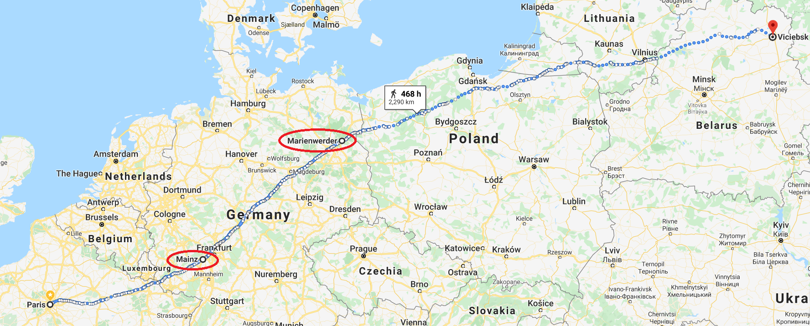
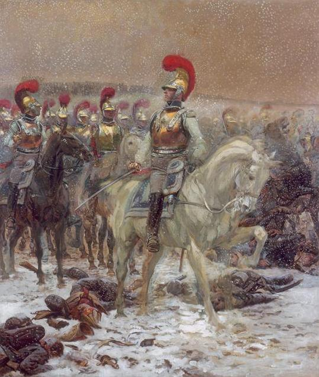

굶주림과 징발 - 러시아군의 뒤를 쫓아서 (1)
게시: 2020-01-27T06:30:36+09:00
결국 러시아군의 후퇴는 드리사(Drissa)까지는 다 계획이 있기 때문에 이루어진 의도적인 것이었지만, 그 이후로는 어쩔 수 없이 당장의 패배를 피하기 위해 줄행랑을 친 것이었습니다. 비텝스크에서 바클레이가 그랬던 것처럼, 러시아군도 싸우고 싶었습니다. 나폴레옹은 물론 싸우고 싶었습니다. 이렇게 서로가 싸우고 싶어했는데도 싸우지 못했던 이유는 러시아 제1군과 제2군이 합류하지 못하고 있기 때문이었습니다. 어떻게 보면 개전 초기 나폴레옹이 러시아 제1군과 제2군 사이에 쐐기처럼 프랑스군을 박아넣어 바클레이와 바그라티온을 분리시켜 놓은 것은 묘수처럼 보였지만, 결국 그 때문에 나폴레옹은 러시아 저 깊숙한 곳으로 기약없이 빨려들어가고 있었습니다. 그런 관점에서 보면 그냥 추격을 멈추고 바클레이와 바그라티온이 서로 합류할 수 있도록 배려해주는 것이 낫지 않았을까 생각할 수도 있습니다. 그러나 물론 그건 말도 안되는 이야기였습니다. 프랑스군과 러시아군이 맞붙어 싸운다고 프랑스군이 항상 이기는 것이 아니니까요. 나폴레옹으로서는 어떻게 해서든 러시아 제1, 2군이 서로 합류하지 못한 상황에서 각개 격파를 해야만 했습니다. 그러다보니 결국 프랑스군은 죽어라고 걸어야 했습니다. 머나먼 러시아 땅으로의 원정은 누군가에게는 꽤 낭만적인 모험처럼 느껴질 수도 있었겠지만, 대부분의 병사들에게는 끔찍한 행군의 연속일 뿐이었습니다. 황실 근위대 중 신참 근위대(La Jeune Garde) 소속 연대 하나는 파리에서 비텝스크까지를 정말 딱 2일, 그러니까 마인츠(Mainz)에서 하루 그리고 마리엔베르더(Marienwerder)에서 하루만 쉬었을 뿐, 2300km에 달하는 거리를 3달 동안 계속 휴식 없이 걸어야만 했습니다. 늦어진 시간을 맞추기 위해 어떤 부대들은 휴식은 커녕 밤에도 잠을 자지 못하고 32시간을 연속으로 계속 걸어 170km를 주파했습니다. 이건 보병들만 힘든 일이 아니었습니다. 말을 타고 가는 기병들도 힘들기는 마찬가지였습니다. 잠이 부족하여 말 위에서 잠이 들어버리는 기병들도 많았고, 그루버(Carl Johann Gruber)라는 바이에른(Bayern) 출신의 흉갑기병 장교에 따르면 그의 부하들은 연일 계속된 행군에 너무 지쳐서 정지 명령이 떨어지면 다들 그냥 그 자리에 털썩 쓰러져 잠에 빠져들었다고 합니다.

(파리에서 마인츠와 마리엔베르더를 거쳐 빌나로, 그리고 결국 비텝스크까지 가는 여정입니다. 468시간 동안 단 한번도 쉬지 않고 꾸준히 걸으면 갈 수 있습니다. 하루에 20km씩 간다고 해도 24일 꼬박 걸어야 합니다.) 뛰는 것도 아니고 걷는 것 정도야 뭐 문제인가 싶을 수도 있겠습니다만, 무거운 배낭과 머스켓 소총을 매고 걷는 것은 매우 힘든 일이었습니다. 당시 프랑스 일반 전열 보병들은 대략 26kg의 무게를 매고 걸었습니다. 당시 병사들의 배낭 속에는 요즘 병사들과 별로 다르지 않은 짐들, 즉 여분의 의류와 군화, 4일치의 건빵 등 비상 식량과 함께 여분의 부싯돌과 나사 드라이버 등이 들어있었고, 60발의 탄약을 소지해야 했습니다. 이건 당시의 영국군이나 약 50년 뒤 남북전쟁 시대의 미국 병사들이 매고 걸어야 했던 것과 비슷한 무게였습니다. 참고로 노새 1마리가 운반할 수 있었던 무게는 대략 4배인 100kg 정도였고, 고대 로마 시대 군단병은 36kg, 현대 미해병대는 45kg을 짊어져야 합니다. 또 요즘 인기있는 스페인 산티아고 순례길에서 권장되는 배낭 무게는 6kg 미만이라고 합니다. 역설적으로, 이렇게 다들 열심히 걸었지만 병력 수가 너무 많은 것에 비해 길이 워낙 좁고 진흙투성이다보니 교통 정체도 심각했습니다. 바퀴살이 부러지거나 말발굽의 편자에 탈이 생기는 바람에 잠시 부대에서 이탈하여 도로 한쪽에서 수선을 해야 했던 포병대는 다시 원부대를 따라잡기 힘들었습니다. 길을 꽉 매운 보병 부대들이 길을 양보하려 하지 않았기 때문이었습니다. 많은 경우 서로 국적과 언어가 달랐기 때문에 이런 실랑이는 흔히 주먹다짐으로 이어졌습니다. 다들 힘들었고 배가 고팠으며, 짜증이 났습니다. 잡힐 듯 말듯 앞서 가는 러시아군을 이렇게 무거운 짐을 짊어지고 쫓아가자면 먹기라도 잘 먹어야 했는데, 먹을 것은 커녕 마실 물을 구하는 것도 쉽지가 않았습니다. (물 이야기는 다음 편에서 따로 하겠습니다.) 그랑다르메 소속 바이에른군 지휘관이었던 폰 쉘러(Georg von Scheler) 장군이 바이에른 국왕에게 보낸 보고서에 따르면 바이에른군은 네만 강은 커녕 폴란드 내의 비스툴라(Vistula) 강을 건넌 이후부터 심각한 보급 문제를 겪었습니다. "우리 군이 비스툴라 강을 건넌 이후 모든 정규 보급과 식량 배급은 완전히 중단되었습니다. 이후 우리가 모스크바에 도달할 때까지 우리는 질서있는 보급 체계 또는 정상적인 징발을 통해서는 단 1파운드의 빵도 단 한잔의 브랜디도 받지 못했습니다." 이탈리아 북서부 피에몬테 출신의 징집병인 쥬세페 벤투리니(Giuseppe Venturini)가 남긴 기록에는 이 기간 중 그랑다르메 병사들이 겪은 매일매일의 고난이 적혀 있습니다. 7월 20일 "끔찍한 날이었다 ! 바보같은 장군 두 놈들 때문에 진흙밭에서 숙영해야 했다." 7월 21일 "어제와 똑같았다." 7월 22일 "어제와 똑같았다." 7월 23일 "어제와 똑같았다." 7월 24일 "멋진 초원 위에서 잠을 잤다. 천국에 온 것 같았다. 베르디에(Verdier) 장군 처소에서 보초를 섰다. 난 오늘 운이 좋았다. 맛좋은 수프를 먹을 수 있었다." 7월 26일 "우리 연대 병사들 중 6명이 굶어 죽었다." 여러분은 이렇게 극도의 피로와 허기를 한꺼번에 겪는 상황에서, 먹을 기회와 잠잘 기회가 동시에 주어진다면 어떤 것을 먼저 택하시겠습니까 ? 저는 먹을 것을 먼저 택할 것 같습니다만 기록에 따르면 다들 잠을 먼저 택하는 모양입니다. 사실 선택의 여지가 많지 않았습니다. 먹을 것이 없었거든요. 총기병대(Carabiniers-à-Cheval) 소속의 드 멜리 백작(Comte de Mailly)이라는 장교의 기록을 보면 대부분의 경우 숙영지에 도착하면 일부 병사들을 차출하여 주변 마을로 먹을 것을 징발하게 했고, 그 사이 하루종일 지쳤던 병사들은 그냥 곯아떨어졌습니다. 징발대가 무엇이든 먹을 것을 구해서 돌아왔을 즈음에는 대부분의 병사들이 잠든 뒤였기 때문에, 병사들은 조를 짜서 일부 병사들이 그런 먹을 것으로 조리를 했고, 잠든 병사들은 다음날 아침에 일어나 그런 초라한 음식을 먹거나 혹은 그럴 시간도 없을 경우 들고 가며 먹었습니다.

(러시아 원정 당시의 총기병대(Carabiniers-à-Cheval)입니다. 원래 총기병대는 글자 그대로 기병총으로 무장한 기병으로서, 그것만 보면 용기병(dragoon)과 차이가 없을 것 같습니다. 그러나 실제로는 완전히 달라서, 용기병은 주무기가 정말 기병총으로서 기병이라기보다는 말로 신속하게 이동하는 보병 정도의 역할을 했고 그에 따라 그냥 평범한 병사과 작은 체구의 군마로 이루어졌습니다. 그에 비해 총기병은 기병총을 소지하기는 했지만 주무기는 직선 형태의 기병도로서, 가장 키가 큰 병사들과 가장 체구가 큰 말로 이루어진 정예 기병이었습니다. 1810년 이전까지는 흉갑을 입지 않았으나 1810년 이후에는 흉갑기병(Cuirassier)처럼 강철 흉갑과 투구를 착용했고, 러시아 원정 때도 그렇게 갑옷을 입고 참전했습니다.) 그러나 이렇게 다음날 아침에라도 뭔가 죽 한 숟가락이라도 먹을 수 있으려면 징발대가 보리 한자루라도 가지고 돌아와야 했습니다. 그런데 그것도 아무나 잘 할 수 있는 것이 아니었습니다. 위에서 언급한 폰 쉘러 장군에 따르면 그런 일에 가장 뛰어난 것은 프랑스군과 폴란드군이었습니다. 이 두 나라 병사들은 나폴레옹을 따라 하도 많은 원정을 경험하다보니 정말 아무 것도 없어 보이는 곳에서도 농부들이 감춰둔 음식물을 찾아내는데 도가 터있었습니다. 그리고 이 두 나라 병사들은 무엇보다 먹을 것을 구하면 그대로 가지고 본진으로 돌아왔습니다. 이들은 그렇게 하지 않을 경우 결국 자기들을 포함해서 모두가 죽는다는 것을 경험으로 잘 알고 있었기 때문이었습니다. 그런데 그랑다르메 소속의 모든 나라 병사들이 다 이 두 나라 병사들 같은 것이 아니었습니다. 폰 쉘러 장군이 보기엔 특히 본인이 소속된 바이에른군은 먹을 것을 구하는 일에는 완전히 젬병이었을 뿐만 아니라, 더 나쁜 건 먹을 것을 찾더라도 본진으로 가져오기 전에 자기들끼리 먹어치웠다는 것입니다. 자기들끼리 먼저 배불리 먹고 남은 것을 가져왔을 때는 이미 본진이 숙영지를 떠나 행군길에 나선 뒤였기 때문에, 이들은 가져온 먹을 것을 버리고 본대를 쫓아가거나 아니면 그냥 먹을 것과 함께 영원히 낙오병으로 남아버렸습니다. 아마도 과장이 섞인 말이었겠지만, 그런 병사들의 어리석은 이기심이 아니었다면 비록 배부르지는 않더라도 모든 병사들이 굶주리지는 않을 정도의 먹을 것은 구할 수 있었을 것이라고 폰 쉘러는 생각했습니다.
Source : 1812 Napoleon's Fatal March on Moscow by Adam Zamoyski https://www.warhistoryonline.com/napoleon/12-things-didnt-know-napoleons-imperial-guard.html https://www.napoleon-series.org/military/organization/c_knapsack.html https://www.popularmechanics.com/military/research/a25644619/soldier-weight/ https://www.caminodesantiago.me/community/threads/backpack-weight.50326/